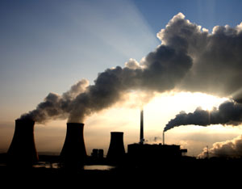

The energy you use to heat and cool your home, power your electric devices and appliances, and fuel your car may seem expensive enough already, but according to a new report from the National Research Council (NRC), there are plenty of health and environmental costs that aren’t reflected in your energy bills.
Quantifying mainly the health effects from the major air pollutants - sulfur dioxide, nitrogen oxides, ozone and particulates - the NRC report estimated such “external” costs at $120 billion for the United States in 2005. More than half of that cost is attributed to the nation’s 406 coal-fired power plants, with only 10 percent of those plants accounting for 43 percent of those damages. The other big offender is motor vehicles, which caused an estimated $56 billion in damages in 2005.
The NRC committee declined to tackle some of the more nebulous costs of energy production and use, including harm to ecosystems, risks to national security, effects of other pollutants (such as mercury), and climate change. The report does note that coal-fired power plants are the single largest source of greenhouse gases in the United States. And while the committee didn’t place a precise cost on climate change, it noted that climate-related damages caused by each ton of carbon dioxide will be far greater in 2030 than they are now. The committee estimated that, if the total amount of greenhouse gas emissions remains steady, the damages caused by each ton of carbon dioxide will increase 50 to 80 percent by 2030.
|
 ISTOCKPHOTO A report from the National Research Council found power plants to be the nation’s most expensive source of energy production and use in terms of health and environmental costs. |
|
|